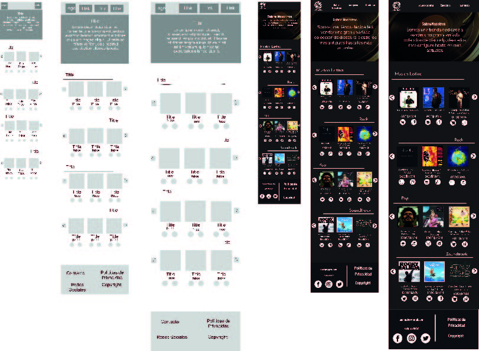
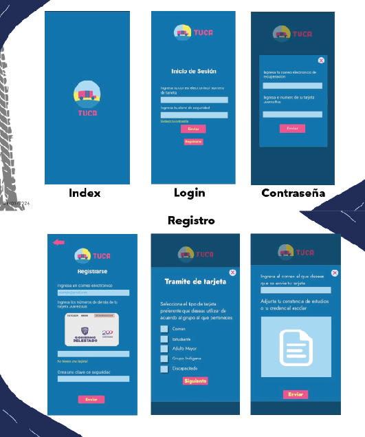

VinylStore E-commerce
Diseño de experiencia de usuario enfocado en patrones de e-commerce, jerarquía visual y consistencia de componentes digitales.
Estructuración de flujos de usuario, wireframing interactivo y diseño de interfaces optimizadas para sistemas web y móviles.

Diseño de experiencia de usuario enfocado en patrones de e-commerce, jerarquía visual y consistencia de componentes digitales.

Maquetación de dashboard administrativo y diseño de UI para la gestión interactiva de registros de pacientes y citas.

Prototipado interactivo de alta fidelidad enfocado en usabilidad móvil, accesibilidad y diseño de sistemas basados en componentes.